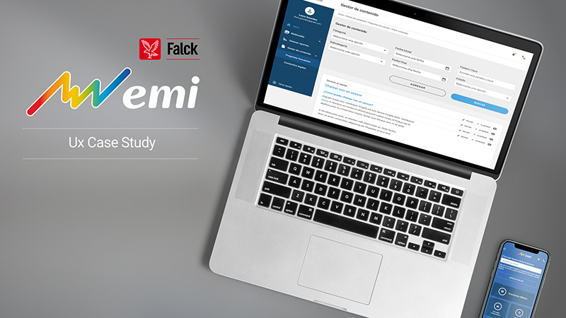
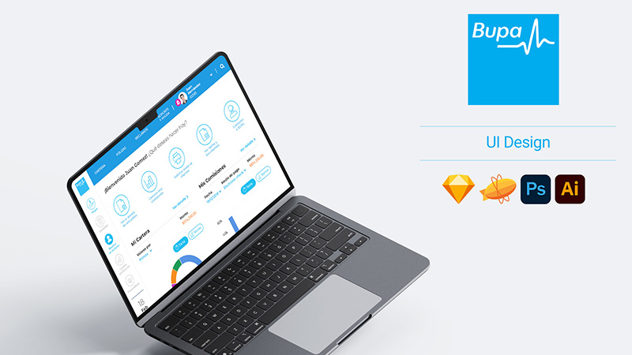
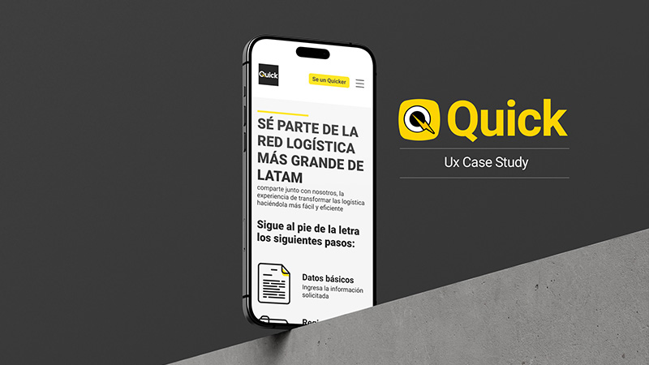

Sobre mi
Experto en diseño de interfaces gráficas y experiencia de usuario en la creación de soluciones digitales atractivas y funcionales. Mi enfoque se centra en la identificación de las necesidades de los usuarios para crear productos que cumplan sus expectativas y necesidades. Con habilidades en el desarrollo de prototipos y pruebas de usabilidad, tengo un historial comprobado en la creación de productos digitales intuitivos y accesibles, trabajando de manera efectiva con los interesados internos y externos para asegurar la alineación de los objetivos y la entrega de soluciones de alta calidad.
" Crear seres ficticios (personas) que representan a los perfiles más comunes entre quienes usarán un producto o servicio..."
Crea a los fines de los 90 y principios de 2000, una técnica de definición de usuarios basada en la creación de arquetipos llamada "personas"

Alan Cooper
CEO at Google
Portafolio

Grupo EMI
En este proyecto, trabajé como experto en UX y UI para Grupo EMI en Colombia y UCM.
Ver proyecto

BUPA
Tuve la oportunidad de aplicar las metodologías Design Thinking y Agile en un proyecto emocionante
Ver proyecto

Quick
Trabajé como experto en UX y UI para Quick, donde apliqué la metodología de Design Thinking
Ver proyectoExperiencia
-
UX/UI Designer - Telefónica Actualmente
Como especialista en UX/UI para el segmento de Movistar en Terminales - eCommerce, realizo entrevistas con usuarios y llevo a cabo investigaciones de usuario para comprender sus necesidades y expectativas. Co-participo en el descubrimiento de productos digitales con stakeholders y me enfoco en el diseño y arquitectura de sistemas de diseño centrados en el usuario. Utilizo prototipado UI/UX de alta y baja fidelidad para crear soluciones digitales efectivas y atractivas para la web, tablet y móvil.
Programas:
- Figma
- Adobe XD
- Adobe CC
-
UX/UI Designer - Quick
Fui un especialista en la gestión, consultoría y desarrollo de procesos de experiencia de usuario (UX), diseño y desarrollo de sistemas de diseño para el sector de transporte y logística. Me apasionó el desarrollo de soluciones digitales atractivas y funcionales que mejoraron la experiencia del usuario. Mi enfoque se centró en la creación de soluciones UX/UI centradas en el usuario que fueron intuitivas y accesibles para garantizar una experiencia del usuario de alta calidad.
Realicé entrevistas a los Quickers para comprender sus necesidades específicas y crear soluciones digitales efectivas y atractivas que satisfagan sus necesidades. Fui un comunicador habilidoso y un miembro comprometido del equipo, trabajando de manera efectiva con los interesados internos y externos para asegurar la alineación de los objetivos.
Programas:
- Figma
- Adobe XD
- Adobe CC
-
UX/UI Designer - Intergrupo
Me especialicé en la gestión, consultoría y desarrollo de procesos UX, así como en el diseño y desarrollo de sistemas de diseño. Con habilidades en el desarrollo de wireframes, mockups y prototipado de alta y baja calidad, tuve experiencia en la creación de arquitectura de información, mapas mentales y user flows para mejorar la experiencia del usuario. Además, tenía experiencia en la investigación de usuario, lo que me permitió comprender las necesidades de los usuarios y crear soluciones digitales efectivas y atractivas que satisfacían sus necesidades. Mi enfoque se centró en la creación de soluciones UX/UI que fueran intuitivas y accesibles para garantizar una experiencia del usuario de alta calidad.
Logros:
- Participación en el desarrollo del sitio web de abonados y boletería QR para el Atlético Nacional
- Participación en el nuevo portal de EMI y UCM
- Participación plataforma de BUPA
Programas:
- Figma
- Adobe XD
- Adobe CC
- Sketch App